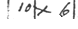
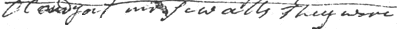
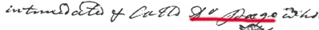
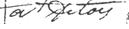

Enter your transcription for each of the lines in the blanks below. The first one has been done for you. When you are done, record your transcription and compare it the McCausland transcription (published by the Maine State Library).



